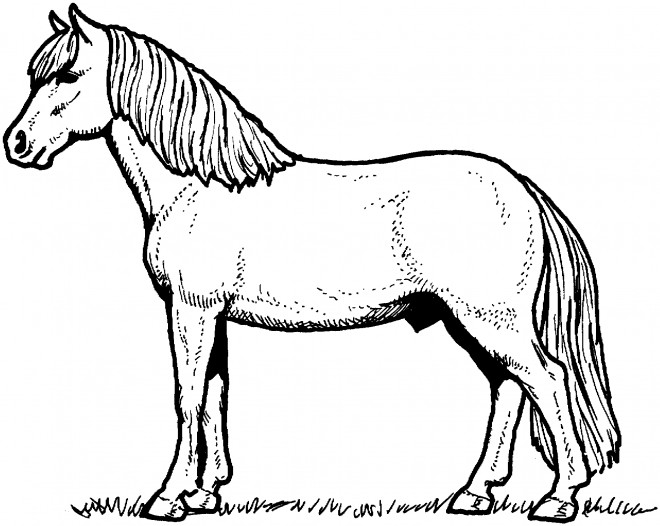

L’équitation est la technique de la conduite du cheval sous l'action humaine. Elle peut être pratiquée comme un art, un loisir ou un sport. Dans cette discipline, l'être humain s'appuie sur l'utilisation d'un équidé, le plus souvent un cheval ou un poney. Le mot provient du latin equitare, qui signifie « monter à cheval ».
L'équitation tient historiquement un rôle utilitaire, puisqu'elle est initialement développée pour faciliter les déplacements. À cela s'ajoute un rôle militaire, par le biais des corps de chevalerie et de cavalerie. Avec la généralisation de la motorisation, elle s'oriente presque essentiellement vers la pratique du sport et des loisirs, principalement dans des centres équestres et des « poneys clubs ». L'équitation fut longtemps une pratique largement masculine, en particulier dans les pays occidentaux. Elle devient mixte au cours du xxe siècle, et attire désormais une majorité de femmes dans ces pays.
Si vous voulez en savoir plus sur mes passions, cliquez ici !
